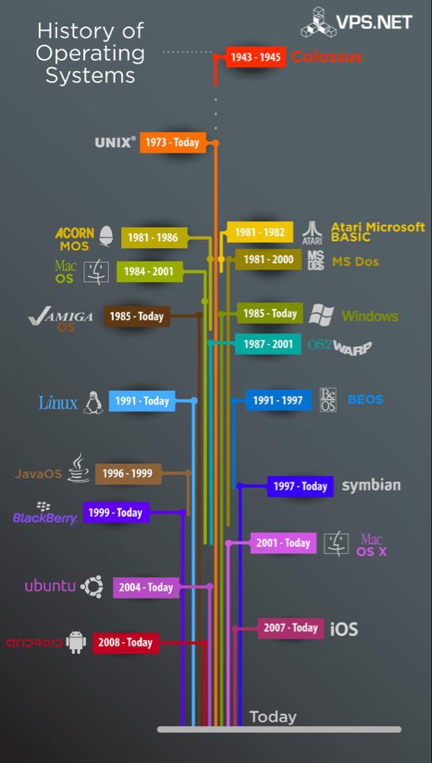

An operating system (OS) is the most important software that runs on a computer. It manages the computer's memory and processes, as well as all of its software and hardware. It also allows you to communicate with the computer without knowing how to speak the computer's language. Without an operating system, a computer is useless
In the beginning of the emergence of computers was based on Mainframed technology, which lacks the forms of smart operating systems known today; Its time for each user was only one use of the device and for a specific time period, after which operating systems were developed and coding languages **were developed, such as: Assembly language and Compiler language, then programmers translated program codes of operating systems into machine language; These machines evolved and became supported by libraries and magnetic tapes, which are linked to the user's program to assist in input and output operations, then operating systems evolved through several stages.
Operating system development
The stages of development of operating systems can be divided as follows:
* The first generation, 1940s: This period is considered to be the oldest period in the history of operating systems. And this is where the first generations of digital computers appeared, and at the beginning of that period the use of Vacuum Tubes and Plug boards appeared.
* The second generation, 1950s: In the early part of this century, routine was improved, and transistors and batch systems appeared.
* The third generation of the sixties of the last century: In this generation the performance efficiency increased from that of the second generation, and the transistor devices were strengthened, and the most distinctive feature of the operating systems of this generation is the emergence of Spooling technology; It is a technology characterized by the speed with the performance of operating systems and is known as simultaneous peripheral operations on line, and this technology makes it easier for users to quickly request and transfer data and inputs.
* The fourth generation: In this generation, computers were developed in a very big way, Large Scale Integration was developed, electrical circuits and chips were developed, and operating systems were developed. Not only that, but also personal computers appeared in this generation, and Microsoft services also appeared in this generation; And Intel technology that is being developed so far.
